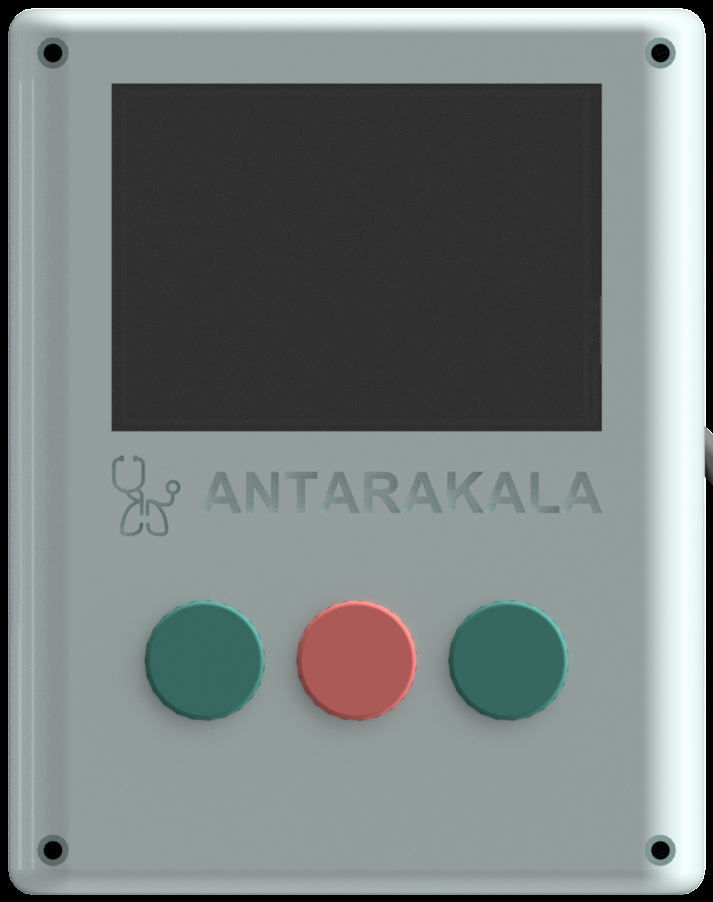

Sambungkan perangkat ANTARAKALA untuk memulai skrining risiko penyakit pernapasan bawah balita secara real-time.
POSTERIOR
(PUNGGUNG)
ANTERIOR
(DADA)
Pastikan pasien duduk tegak dan tenang. Area dada dan punggung dapat diakses dengan mudah.
Kurangi kebisingan di sekitar ruangan untuk memastikan kualitas rekaman auskultasi optimal.
Operasikan perangkat fisik ANTARAKALA di samping untuk merekam suara paru. Layar ini akan mengikuti secara otomatis.
Pasien: —
Pertemuan: #1
Laju napas & tarikan dinding dada (chest indrawing) dihitung otomatis oleh sensor IMU melalui mekanisme sensor fusion — tidak perlu diinput manual.
Kecerdasan Buatan (AI) sedang menganalisis suara paru dan parameter klinis untuk mendeteksi risiko LRTI — seluruhnya berjalan lokal di perangkat, tanpa internet.
Harap tidak menutup layar ini hingga analisis selesai untuk akurasi data maksimal.
Pasien: —
— Bulan
Tinjauan faktor klinis yang mendasari hasil skrining.
Memuat kesimpulan...
*Visualisasi simulasi untuk demonstrasi antarmuka, bukan spektrogram data real.
Faktor-faktor di bawah ini adalah penyebab utama pasien dikategorikan dalam kondisi ini, dihitung oleh mesin skoring LightGBM dan dijelaskan dengan SHAP.
